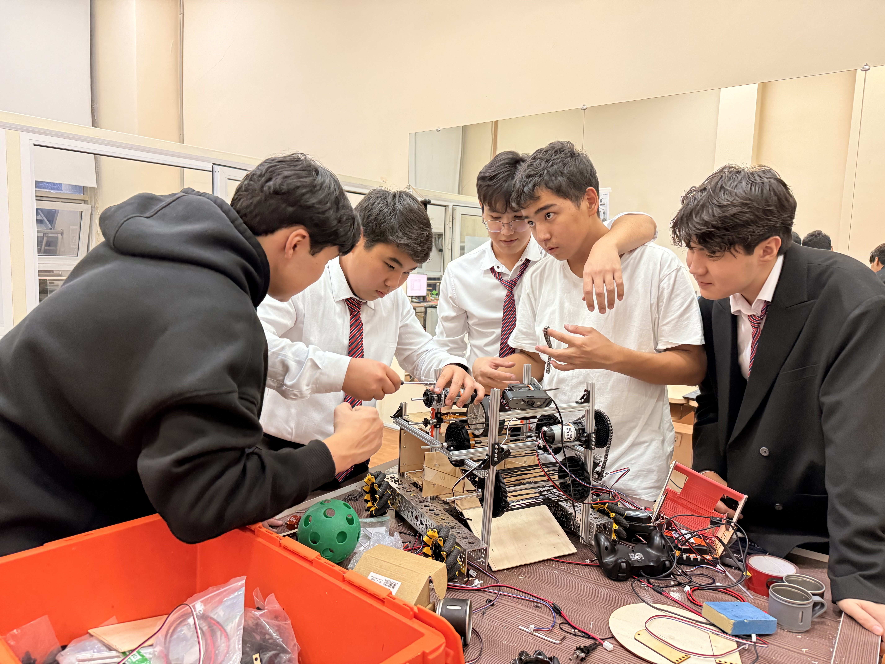

FTC team from Shymkent, Kazakhstan, bringing together engineers, programmers and future technology creators.
Meet the Team
FIRST (For Inspiration and Recognition of Science and Technology) is a global robotics community preparing young people for the future. FIRST Kazakhstan brings this transformative experience to students all across Kazakhstan, fostering innovation, teamwork and technical excellence through the FIRST Tech Challenge (FTC) program.
FIRST is a global non-profit that inspires young people to become leaders in science and technology by engaging them in exciting mentor-based programs that build skills in science, engineering and technology.
FIRST Tech Challenge (FTC) is a robotics competition for students in grades 7-12. Teams design, build and program robots to compete in alliance format against other teams.
FTC teaches students valuable STEM skills, teamwork and problem solving while having fun. Participants gain real-world engineering experience and build confidence in their abilities.
We are Team STRIKE #33624 from Shymkent, Kazakhstan, bringing together students who are passionate about robotics, programming, engineering and modern technology.
Our team designs, builds and programs robots for FIRST Tech Challenge competitions. We develop engineering skills, participate in STEM projects and inspire younger students to explore technology and innovation.
Learn more about our teamGet started with FTC through our comprehensive learning modules, designed for teams at every level.
Learn the fundamentals: getting started, the registration process and understanding the season structure. Perfect for new teams.
Master robot construction: drivetrains, mechanisms, electronics and sensors. Build competitive robots with confidence.
Develop your programming skills: FTC SDK, TeleOp, Autonomous, Odometry and AprilTag detection. Code like a pro.